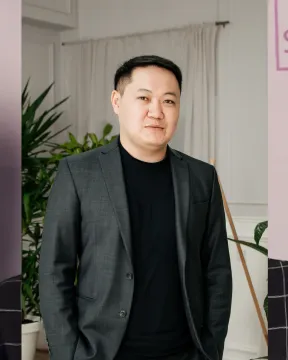
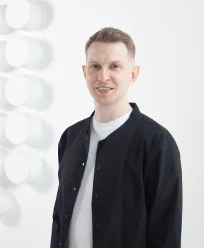

Скаутам
Находите сильные стартапы раньше других
Венчурный скаут выявляет перспективные стартапы на ранней стадии и передаёт их венчурной компании. Присоединяйтесь к сети скаутов Activat VC.
Как это работает
Рекомендуете — мы разбираем — вы участвуете
Скаутом может стать тот, кто хорошо знает рынок и видит сильные команды до того, как о них узнают все.
Рекомендуете
Присылаете стартап через форму скаута.
Мы разбираем
Проект проходит тот же экспертный разбор, что и прямые заявки.
Что вы получаете
Вознаграждение при сделке по рекомендованному стартапу, статус скаута Activat VC и доступ к нашим событиям. Условия обсуждаем при подключении.
Сеть скаутов
Наши скауты
Марат Шакен
IT-обозреватель, 12 лет в IT и стартапах; основатель телеграм-канала @thetechkz, более 4 лет в команде Astana Hub.

Нуржан Кульшебаев
Финансовый аналитик и консультант: более 50 финансовых моделей, помог привлечь больше 3 млн долларов.
Шолпан Досмаханбет
8 лет в венчурном финансировании; руководила маркетингом и коммуникациями в Qaztech Ventures и QIC.
Ботагоз Габдуллина
Инвестиционный аналитик и фандрайзер, помогает стартапам Центральной Азии выйти на глобальных инвесторов.

Евгений Годов
IT-предприниматель, партнёр Activat VC в Северной Европе; эксперт по ИИ и SaaS.
Даниэль Абдылдаев
Инвестиционный директор Accelerate Prosperity, управляющий партнёр фонда ADVentures.